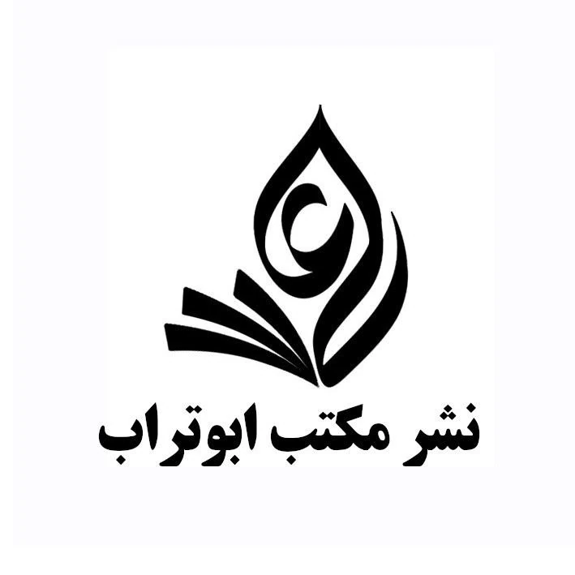

سایت در حال بهروزرسانی است
همراه گرامی؛ در حال ارتقاء و بهبود زیرساختهای سایت «نشر مکتب ابوتراب» هستیم. به زودی با تجربهای بهتر در خدمت شما خواهیم بود. از صبر و شکیبایی شما سپاسگزاریم.

همراه گرامی؛ در حال ارتقاء و بهبود زیرساختهای سایت «نشر مکتب ابوتراب» هستیم. به زودی با تجربهای بهتر در خدمت شما خواهیم بود. از صبر و شکیبایی شما سپاسگزاریم.